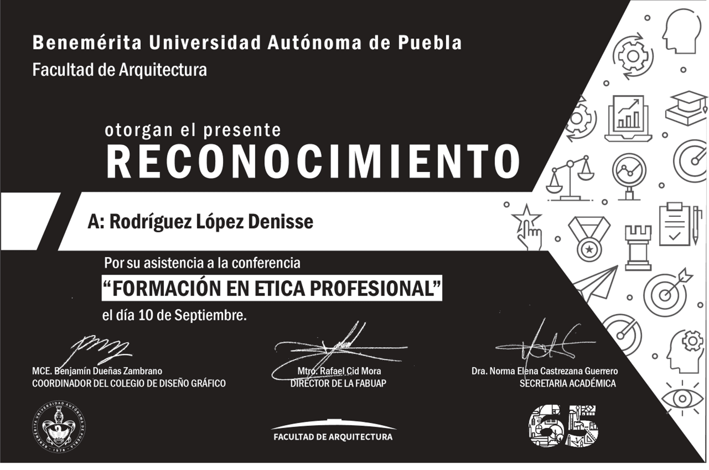
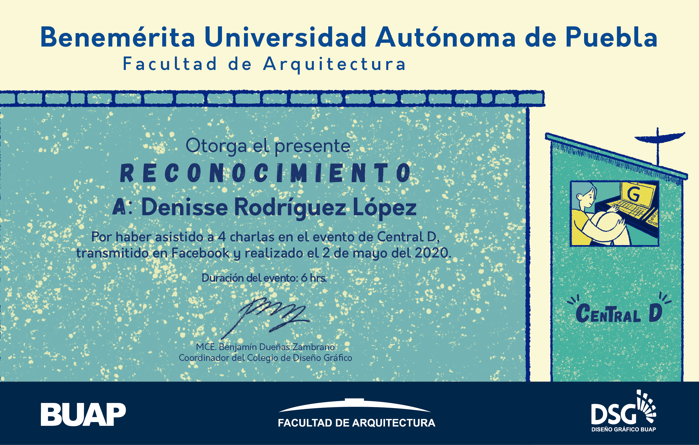

RECONOCIMIENTOS
Exposición "Semblanza actual de las adicciones en el Diseño Gráfico"

Este reconocimiento es por mi participación en una exposición de mi clase de fotografía en la que demostrábamos las drogas saliendo de las ideas comunes.
Fecha: 11 Abril 2019
Lugar: Benemérita Universidad Autónoma de Puebla (BUAP), Puebla, Pue.
Conferencia "Formación en ética profesional"

En esta conferencia hubo varios exponentes los cuales daban consejos para mejorar y como seguir formándote como profesionista.
Fecha: 10 septiembre 2019
Lugar: Benemérita Universidad Autónoma de Puebla (BUAP), Puebla, Pue.
Evento "Central D 2020"

Este fue un evento en línea realizado por el Colegio de Diseño Gráfico, fueron 4 charlas en las que Diseñadores Gráficosde diferentes países como Colombia, Italia y México mostraban sus trabajos y daban recomendaciones.
Fecha: 2 Mayo 2020
Lugar: Benemérita Universidad Autónoma de Puebla (BUAP), Puebla, Pue.